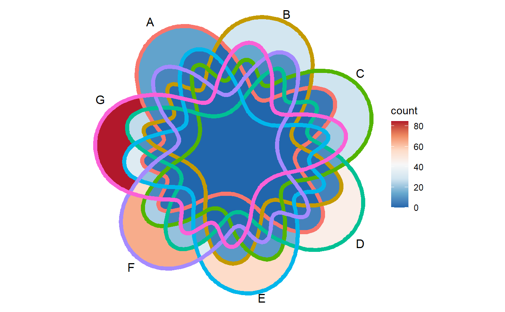
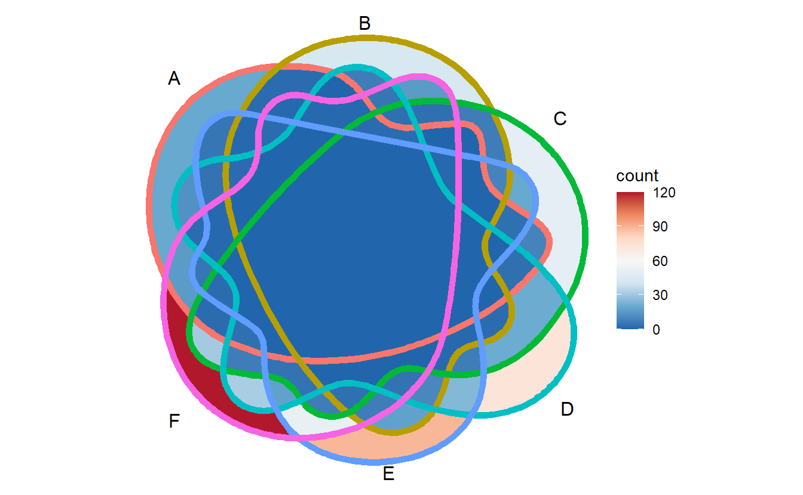
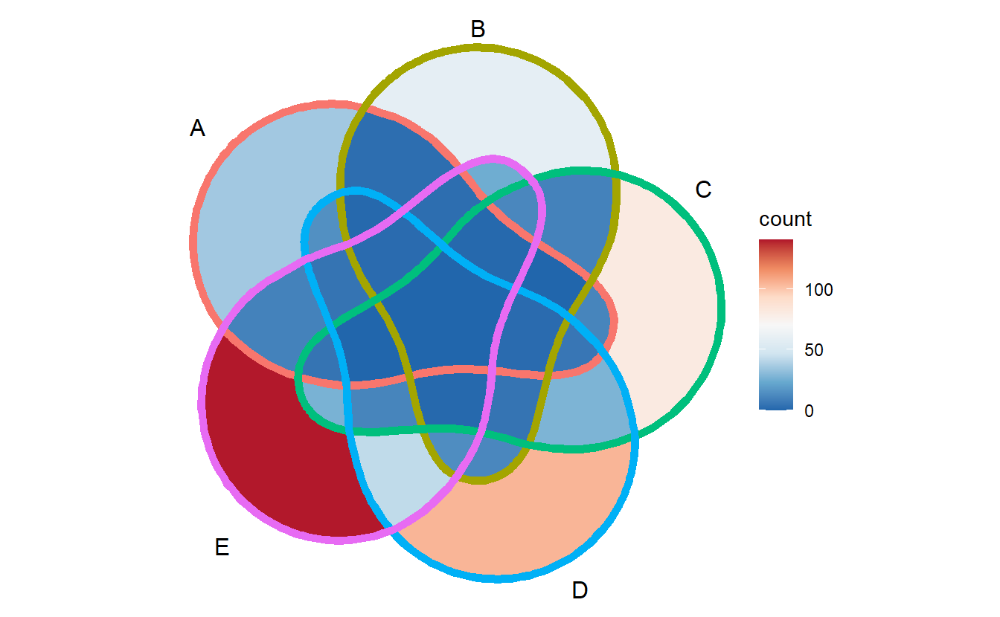
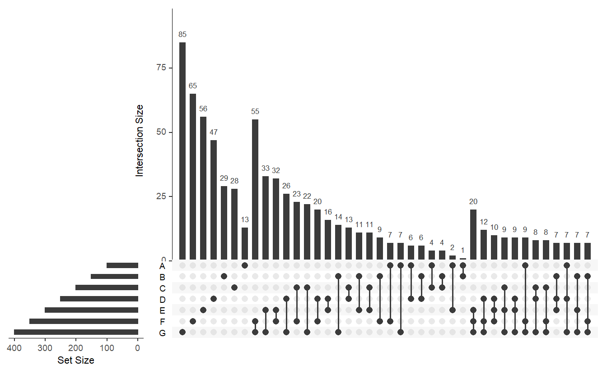

Chapter 5 Applications of Venn, Euler and Upset plot
To date, there are three major methods to display set relationships, Venn diagram, Euler diagram and UpSet plot (Conway, Lex, and Gehlenborg 2017). The UpSet plot is a state-of-art visualization technique for the quantitative analysis of sets (Lex et al. 2014), and support unlimited number of sets.
When the number of sets is very large, UpSet plot is more reasonable be choose. By contrast, Venn and Euler are both traditional approaches to finish this task. Euler diagram is area-proportional, and only show relevant relationships.
Since human eye is less sensitive to area than to color, we believe that using color filling to show the difference between different regions is more suitable for ordinary biomedical studies.
For example, ggVennDiagram support Venn plot up to 7 sets.
genes <- paste0("gene",1:1000)
set.seed(20210507)
x <- list(A = sample(genes,100),
B = sample(genes,150),
C = sample(genes,200),
D = sample(genes,250),
E = sample(genes,300),
F = sample(genes,350),
G = sample(genes,400))but if we plot them, we will find it is difficult to separate the border of different sets in the plot (even with thick edges), especially for 7 and 6 sets Venn.
ggVennDiagram(x, label = "none", edge_size = 2) + scale_fill_distiller(palette = "RdBu")
ggVennDiagram(x[1:6], label = "none", edge_size = 2) + scale_fill_distiller(palette = "RdBu")
ggVennDiagram(x[1:5], label = "none", edge_size = 2) + scale_fill_distiller(palette = "RdBu")
By contrast, if we apply this large x to upset(), it will get:
library(UpSetR)
upset(fromList(x), nsets = 7)
In my opinion, this plot is better to show the intersection values between them.